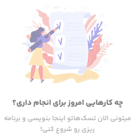

تسک های امروز
3 تسک را باید انجام دهید.
افزودن وظیفه جدید

جلسه با مدیران پروژه
بالا
جلسه با محسن یگانه و مریم جلالی
خرید میوه و سبزیجات و لبنیات برای
خانه
متوسط
سوپرمارکت یاران دریایی
تماس با جمشید
پایین
باید در مورد کارهای باقیمانده از پروژه قبلی صحبت کنیم.
تسکهای انجام شده
3 تسک را انجام دادهاید.